| 地震の話 | |
| 今村 明恒 | |
| (2012) | |
地震の話
今村明恒
日本
は地震國
であり、又
地震學
の開
け始
めた國
である。これは誤
りのない事實
であるけれども、もし日本
は世界中
で地震學
が最
も進
んだ國
であるなどといふならば、それは聊
かうぬぼれの感
がある。實際
地震學
の或方面
では、日本
の研究
が最
も進
んでゐる點
もあるけれども、其他
の方面
に於
ては必
ずしもさうでない。其故
著者等
は地震學
を以
て世界
に誇
らうなどとは思
つてゐないのみならず、此頃
のように、わが國民
が繰返
し地震
に征服
せられてみると、寧
ろ恥
かしいような氣持
ちもする。即
ち大正十二年
の關東大地震
に於
ては十萬
の生命
と五十五億圓
の財産
とを失
ひ、二年後
但馬
の國
のけちな地震
の爲
、四百
の人命
と三千萬圓
の財産
とを損
し、又
二年後
の丹後地震
によつて三千
の死者
と一億圓
の財産
損失
とを生
じた。そして此等
の損失
の殆
んど全部
は地震後
の火災
に由
るものであつて、被害民
の努力
次第
によつては大部分
免
れ得
られるべき損失
であつた。然
るに事實
はさうでなく、あのような悲慘
な結果
の續發
となつたのであるが、これを遠
く海外
から眺
めてみると、日本
は恐
ろしい地震國
である。地震
の度毎
に大火災
を起
す國
である。外國人
は命懸
けでないと旅行
の出來
ない國
である。國民
はあゝ度々
地震
火災
に惱
まされても少
しも懲
りないものゝようである。地震
に因
つて命
を失
ふことをなんとも思
つてゐないのかも知
れないなどといふ結論
を下
されないとも限
あるまい［＃「限
あるまい」はママ］
。實際
これは歐米人
の多數
が日本
の地震
に對
する觀念
である。かく觀察
されてみる時
、著者
の如
き斯學
の專攻者
は非常
な恥辱
を感
ぜざるを得
ないのである。勿論
この學問
の研究
が容易
に進歩
しないのも震災國
たるの一因
には相違
ないが、然
しながら地震
に對
して必要
な初歩
の知識
がわが國民
に缺
けてゐることが、震災
擴大
の最大原因
であらう。實
に著者
の如
きは、地震學
が今日
以上
に進歩
しなくとも、震災
の殆
んど全部
はこれを免
れ得
る手段
があると考
へてゐるものゝ一人
である。
著者 は少年諸君 に向 つて、地震學 の進 んだ知識 を紹介 しようとするものでない。又 たとひ卑近 な部分 でも、震災防止 の目的 に直接 關係 のないものまで論 じようとするのでもない。但 し震災防止 につき、少年諸君 ［＃ルビの「どくしや」はママ］ が現在 の小國民 としても、又 他日 國民人物 の中堅 としても自衞上 、はた公益上 必要 缺 くべからざる事項 を叙述 せんとするものである。
わが國
は地震學
發祥
の地
といはれてゐる。これは文化
の進
んだ國
としては地震
に見舞
はれる機會
の多
いからにもよるのであるが、なほ他
の一因
として明治維新後
、わが國
の文化開發事業
の補助者
として招聘
した歐米人
が、多
くは其道
に於
て、優秀
な人達
であつたことも數
へなければならぬ。事
の發端
は、明治十三年
二月二十二日
横濱
並
にその近郊
に於
て、煉瓦煙突
並
に土壁
に小破損
を生
ぜしめた地震
にある。この時
大學
其他
の官衙
にゐた内外
達識
の士
が相會
して、二週間目
には日本地震學會
を組織
し、つゞいて毎月
の會合
に有益
な研究
の結果
を發表
したが、創立
數箇月
の後
、當時
東京帝國大學
理學部
に於
ける機械工學
及
び物理學
の教授
であつたユーイング博士
（現今
エヂンバラ大學
總長
）は水平振子地震計
の發明
を公
にし、ついで翌年
には工學部大學校
電氣學教授
たりしグレー博士
の考案
を改良
した上下動地震計
を作
り出
した。これが即
ち現今
の地震計
の基礎
の形式
であつて、當今
行
はれてゐるミルン地震計
、大森地震計
、ガリッチン地震計
、パシュウィチ水平振子
など、其構造
の要點
は皆
ユーイング地震計
である。實
にこの地震計
の發明
は、それまで極
めて幼稚
であつた地震學
が本當
の學問
に進歩
した基
であるので、單
に此
一點
からみても、地震學
は日本
に於
て開
けたといつても差支
へないくらゐである。それのみならず日本地震學會
から出版
せられた二十册
の報告書
は、當時
世界
に於
て唯一
の地震學雜誌
であつたのみならず、收録
せられた材料
、ミルン教授
等
によつて物
せられたる多
くの論文
、いづれも有益
な資料
であつて、今日
でも地震學
について何
か研究
でも試
みんとするものゝ、必
ず參考
すべき古典書
である。
それやこれやの關係
で、日本
は地震學
開發
の國
といはれてゐるのであるが、然
し其開發者
の重
な人々
［＃ルビの「じんこう」はママ］
は外國人
、特
にイギリス人
であつた。關谷教授
、大森博士
などの加
はれたのはずつと後
のことである。
明治二十四年
十月二十八日
の濃尾大地震
は、地震學
にとつて第二
の時代
を作
つたものである。此頃
に於
て日本地震學界
［＃「學界」はママ］
は解散
の止
むなきに至
つたが、新
たにわが政府事業
として起
された震災豫防調査會
が之
に代
つた。此調査會
の會員
は全部
日本人
であつて、地震學
、物理學
、地質學
、地理學
、土木工學
、建築學
、機械工學
等
、地震學
の理論
並
に應用
に關
した學問
に於
てわが國
第一流
の專門家
を網羅
したものであつた。隨
つて地震動
の性質
、地震
に損傷
しない土木工事
や、建築
の仕方
等
についての研究
が非常
に進
み、木造
竝
に西洋風
の家屋
につき耐震構造法
など殆
んど完全
の域
に進
んだ。調査會
が大正十三年
廢止
せられるに至
るまでに發表
した報告書
は和文
のもの百一號
、歐文
のもの二十六號
、別
に歐文紀要
十一册
、歐文觀測録
六册
は、今日
世界
が有
する地震學參考書
の中堅
をなすものであつて、これ等
の事業
は、日本地震學會時代
に於
て專有
してゐたわが國
の名聲
を辱
かしめなかつたといへるであらう。
日本
に於
ける地震學
のこれまでの發達
は主
に人命
財産
に關
する方面
の研究
であつた。然
るに最近
二十年
の間
、歐米
に於
ける地震學
は他
の方面
に發達
した。それは遠方地震
の觀測
によつて、わが地球
の内部
の構造
を推究
する仕方
である。少年讀者
は、天文學
、地理學
、地質學
、物理學
等
の應用
によつて、わが地球
の球體
に近
きこと、平均密度
が五・五なること、表面
に近
き部分
の構造
、内部
に蓄
へられる高熱
、地球
が一箇
の大
きな磁石
であることなどを學
ばれたであらう。又
此等
の學問
の力
によつて、わが地球
は鋼鐵
よりも大
きな剛性
を有
してゐることも分
つて來
た。即
ち月
や太陽
の引力
によつてわが地球
が受
けるひづみの分量
は、地球全體
が鋼鐵
で出來
てゐると假定
した場合
の三分
の二
しかないのである。言葉
をかへていへば地球
の平均
のしぶとさは鋼鐵
の一倍半
である。かういふ風
にしてわが地球
の知識
はだん〳〵進
んで來
たけれども、其内部
の成立
ちに立入
つた知識
は毛頭
進
んでゐないといつて宜
しかつた。實際
地質學
で研究
してゐる地層
の深
さは地表下
二三里内
に横
たはつてゐるもの許
りであつて、醫學上
の皮膚科
にも及
ばないものである。但
し茲
に一
つの研究
の手懸
りが出來
たといふのは、地球
の表面
近
くから放
つた斥候
が、地球内部
にまで偵察
に出掛
けそれが再
び地球
の表面
に現
れて來
て報告
をなしつゝあることが氣附
かれたことである。此斥候
は何者
であるかといふと、大地震
のときに起
る地震波
である。實際
地震
は、地球
の表面
に近
い所
に發生
するものであるが、ちようど風
が水面
に波
を起
すように、又
發音體
が空氣中
に音波
を起
すように、地震
は地震波
を起
すのである。さうして地震
が大
きければ大
きい程
地震波
［＃ルビの「ぢくんぱ」はママ］
も大
きいので、これが地球
の表面
を沿
うて四方八方
に擴
がり、或
は地球
を一廻
りも二廻
りもすることもあるが、それと同時
に地震波
は地球内部
の方向
にも進行
して反對
の方面
に現
れ、場合
によつては地球
の表面
で反射
して再
び他
の方面
に向
うのもある。但
し此斥候
の報告書
とも名
づくべきものは、單
に地震波
の種々
の形式
のみであるから、これを書取
り其上
にそれを讀
み取
ることを必要
とする。これは容易
ならぬ爲事
であるが、しかしながら單
に困難
であるだけであつて決
して不可能
ではない。
地震波
の偵察
した結果
を書
き取
る器械
、これを地震計
と名
づける。前
にユーイング教授
が地震計
を發明
したことを述
べたが、これは實
に容易
ならざる發明
であつたのである。讀者
試
みに地震計
の原理
を想像
してみるがよい。地上
の萬物
は地震
のとき皆
搖
れ出
すのに、自分
だけ空間
の元
の點
から動
かないといふような方法
を工夫
しなければなるまい。これは決
してさう安々
と考
へ出
せるはずのものではないのであるが、更
に其精巧
なものに至
つては、人
の身體
には勿論
、普通
の地震計
にも感
じない程
の地震波
まで記録
することが出來
るのである。特
に其中
、ゆつくりとした震動
、例
へば一分間
に一糎
程
を靜
かに往復振動
するような場合
に於
ても、これを實際
のまゝに書取
らしめることが長週期地震計
と名
づけるものゝ特色
である。かういふ地震計
で遠方
の大地震
を觀測
すると、その記録
した模樣
が極
めて規則正
しいものとなつて現
［＃ルビの「あらは」は底本では「はらは」］
れて來
て、今日
では模樣
の一
つ〳〵について其經路
が既
に明
かにせられてゐる。これによつて地球
の内部
を通
るときの地震波
の速
さは、地球
を鋼鐵
とした場合
の幾倍
にも當
ることが分
り、又
地球
の内部
は鐵
の心
から成
［＃ルビの「か」はママ］
り立
つてをり、その大
きさは半徑
二千七百粁
の球
であることが推定
せられて來
た。
地震學
の今日
の進歩
によつて、地球
の内部状態
が分
りかけて來
たことは右
の通
りであるが、實際
地震學
を除外
しては、此地球内部状態
の研究資料
となるところのものが全
く氣
づかれてゐないのである。さればこそ歐米
の地震學者
の多
くは此方面
の研究
に興味
を持
ち、また主力
を傾
けてゐるのである。實際
地震
の全
く起
ることなき國
に於
ては、生命
財産
に關係
ある方面
の研究
は無意味
であるけれども、適當
な器械
さへあれば、世界
の遠隔
した場所
に起
つた地震
の餘波
を觀測
して、前記
の如
き研究
が結構
出來
るのである。
前
に述
べた通
り地震學
の研究
は、便宜上
これを二
つの方面
に分
けることが出來
る。即
ち一
つは人命
財産
に直接
關係
ある事項
、他
は地球
の内部状態
の推究
に關係
ある事項
である。わが國
に於
ける地震學
は無論
第一
の方面
には著
しい發達
を遂
げ、決
して他
に後
れを取
つたことがないのみならず、今後
に於
てもやはり其先頭
に立
つて進行
することが出來
るであらうと信
じてゐる。然
るに第二
の方面
に於
ては、歐洲
特
にドイツ邊
に優秀
な學者
が多
く現
れ、近年
わが國
は此點
について彼
に一歩
を讓
つてゐたかの感
があつたが、大正十二年
關東大地震
以來
、研究者
次第
に増加
し優秀
な若
い學者
も出來
て來
たので、最近
二三年
の間
に於
ては此方面
にも手
が次第
に伸
びて來
て、今日
では最早
彼
に後
れてゐようとは思
はれない。
地震學
の應用
によつて地球
の内部状態
が可
なりに明
かるくなつて來
たことは前
にも述
べた通
りであるが、本篇
に於
ては此方面
に向
つて、前記
以上
に深入
りしようとは思
はない。但
し地震
の起
り樣
、即
ち地震
はいかなる場所
に於
てどんな作用
で起
るかの大體
の觀念
を得
るため、地球
の表面
に近
き部分
の構造
を述
べさして貰
ひたい。
わが地球
には水界
と陸界
との區別
があり、陸界
は東大陸
、西大陸
、濠洲
等
に分
れてゐる。此陸界
と水界中
に於
て特
に深
い海
の部分
とは、土地
の構造
、特
に其地震學上
から見
た性質
に於
て可
なりな相違
がある。大陸
は主
として花崗岩質
のもので出來
てゐて、大體
十里
程度
の深
さを持
つてゐるようである。それは下
の鐵心
に至
るまでは玄武岩質
のものもしくはそれに鐵分
が加
はつたもので出來
てゐて、これは急速
に働
く力
に對
して極
めてしぶとく抵抗
する性質
を備
へてゐるけれども、緩
く働
く力
に對
しては容易
に形
を變
へ、力
の働
くまゝになること、食用
の飴
を思
ひ出
させるようなものである。さうして深
い海
の底
はこの質
の層
が直接
其表面
まで達
してゐるか、或
は表面近
く進
んで來
てゐて、其上
を陸界
の性質
のもので薄
く被
ふてゐるくらゐにすぎぬと、かう考
へられてゐる。
地球
はさういふ性質
の薄皮
を以
て被
はれてをり、深海床
又
は地下
深
い所
は、緩
く働
く力
に對
してしぶとく抵抗
しないので、地震
を起
さうといふ力
は大陸
又
は其周圍
に於
ては次第
に蓄積
することを許
されても、深
い海底
特
に地球
の内部
に於
ては、たとひかような力
が働
くことがあつても、風
に柳
の譬
の通
り、すぐにその力
のなすまゝに形
を調節
して平均
が成
り立
つため、地震力
が蓄
へられることを許
されない。そこで大
きな地震
は、大陸
又
は其周圍
に於
て、十里以内
の深
さの所
に起
ることが通常
であつて、深
い海
の中央部
、又
は數十里
或
は數百里
の深
さの地下
では起
らない。たとひそこに地震
が起
ることがあつても、それは大
きくないものに限
るのである。
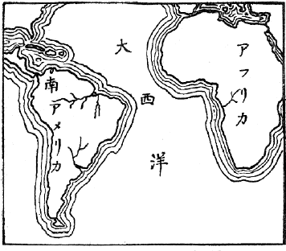
Ⅸアフリカ海岸と南米東岸との符号
大陸
は現今
のように五大洲
に分
れてゐるけれども、地球
が融
けてゐた状態
から、固
まり始
めたときには、單
に一
つの塊
であつたが、それが或作用
のために數箇
の地塊
に分裂
し、地球
の自轉
其他
の作用
で、次第
に離
れ離
れになつて今日
のようになつたものと信
じられてゐる。讀者
もし世界地圖
を開
かれたなら、アフリカの西沿岸
の大
きな凹
みが、大西洋
を隔
てた對岸
の南
アメリカ、特
にブラジルの沿岸
のでつぱりに丁度
割符
を合
せたようにつぎ合
はされることを氣附
かれるであらう。このような海岸線
の組合
せは地球上
至
る所
に見出
されるが、紅海
の東海岸
と西海岸
との如
きも著
しい一組
である。もし手近
かな例
が欲
しければ、小規模
ではあるけれども、浦賀海峽
の左右
兩岸
を擧
げることが出來
る。これを熟視
されると、兩對岸
が相
接觸
してゐた模樣
が想像
せられるであらうが、さう接續
してゐたと考
へてのみ説明
し得
られる地理學上
の事項
が、又
其中
に含
まれてゐるのである。
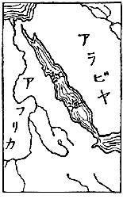
Ⅸ紅海兩海岸の符号
大陸
は、譬
へば飴
の海
に浮
んでゐる船
である。これが浮動
を妨
げゐるのは深海床
から伸
ばされた章魚
の手
である。そしてこの章魚
は大陸
の船縁
を摑
んでゐるのである。或
極限
まではかくして大陸
の浮動
を支
へてゐるけれども、遂
に支
へ切
れなくて或
は手
を離
したり或
は指
を切
つたりして平均
が破
れ、隨
つて急激
な移動
も起
るのである。此急激
な移動
、これが即
ち大地震
の原因
である。もしかような大移動
が海底
で起
れば津浪
を起
すことにもなる。
火山作用
によつて地震
を起
すことは、別
に説明
を要
するまでもないことである。又
其作用
によつても地震
が起
されることがないでもないが、いづれの場合
に於
ても、大地震
とは縁遠
いものゝみである。隨
つて人命
財産
の損失
から見
るとき、これ等
の問題
は考
へに入
れなくとも差支
へないであらう。
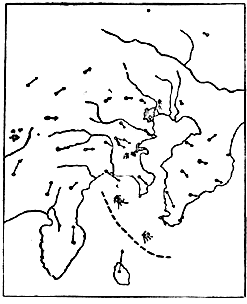
Ⅸ關東大地震の震原と地盤の移動
この際
一言
して置
く必要
のあることは地震
の副原因
といふことである。即
ち地震
が起
るだけの準備
が出來
てゐる時
、それを活動
に轉
ぜしめる機會
を與
へるところの誘因
である。例
へば鐵砲
の彈丸
を遠方
へ飛
ばす原因
は火藥
の爆發力
であるが、これを實現
せしめる副原因
は引金
を外
す作用
である。鐵砲
に彈藥
が裝塡
してあれば引金
を外
すことによつて彈丸
が遠方
に飛
ぶが、もし彈藥
が裝塡
してなく或
は單
に彈丸
だけ詰
めて火藥
を加
へなかつたなら、たとひ幾度
引金
を外
しても彈丸
は決
して飛
び出
さない。地震
の場合
に於
て此
引金
の働
きに相當
するものとして、氣壓
、潮
の干滿
などいろ〳〵ある。例
へば相模平野
に起
る地震
に於
ては、其地方
の北西方
に於
て氣壓
が高
く、南東方
に於
てそれが低
いと其地方
の地震
が誘發
され易
い。其故
地震
の豫知問題
の研究
に於
て右
のような副原因
を研究
することも大切
であるが、然
しながら事實上
の問題
として引金
の空外
しともいふべき場合
が頗
る多
いことである。つまり百千
の空外
しに對
して僅
に一回
の實彈
が飛
び出
すくらゐの事
であるから、かような副原因
だけを研究
してゐては、豫知問題
の方
へ一歩
も進出
することが出來
ないような關係
になるのである。
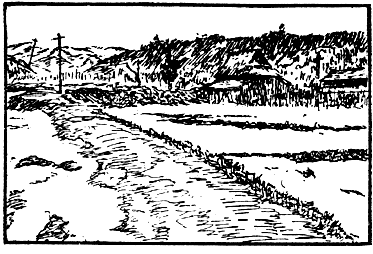
Ⅸ丹後地震に伴へる郷村断層
豫知問題
の研究
について最
も大切
な目標
は、地震
の主原因
の調査
である。彈藥
が完全
に裝塡
されてあるか、否
かを調
べることである。近時
此方面
の研究
がわが日本
に於
て大
いに進
んで來
た。著者
は昭和二年
九月
チェッコスロバキア國
の首府
プラーグに於
ける地震學科
の國際會議
に於
て、此問題
に關
するわが國
最近
の研究結果
につき報告
するところがあつたが、列席
の各員
は著者
が簡單
に演述
した大地震
前徴
につき更
に詳細
な説明
を求
められ、頗
る滿足
の態
に見受
けた。實際
地震
の豫知問題
の解決
は至難
の業
であるに相違
ない。然
しながら決
して不可能
のものとは思
はない。著者
の如
きは、此問題
は既
にある程度
までは机上
に於
て解決
せられてゐると思
つてゐる。殘
るところは其考案
の實施
如何
といふ點
に歸着
する。而
も其實施
は一時
に數十萬圓
、年々
十萬圓
の費用
にて出來
る程度
である。
地震
の豫知問題
が假
に都合
よく解決
されたとしても、震災防止
については猶
重大
な問題
が多分
に殘
るであらう。假
に地震豫報
が天氣豫報
の程度
に達
しても、雨天
に於
ては雨着
や傘
を要
するように、又
暴風
に對
しては海上
の警戒
は勿論
、農作物
、家屋
等
に對
しても臨機
の處置
が入用
であらう。其上
、氣象上
の大
きな異變
については單
に豫報
ばかりで解決
されないこと、昭和二年
九月十三日
、西九州
に於
ける風水害
の慘状
を見
ても明
らかであらう。著者
の想像
では、假
に地震豫報
が出來
る日
が來
ても、それは地震
の起
りそうな或
特別
の地方
を指摘
し得
るのみで、それが幾時間後
か將
た幾日後
に實現
するかを知
るのは更
に研究
が進
まねば解決
出來
ないことゝ考
へる。要
するに地震學
進歩
の現状
に於
ては、何時
地震
に襲
はれても差支
へないように平常
の心懸
けが必要
である。建物
や土木工事
を耐震的
にするといふようなことは、これ亦
平日
行
ふべきことではあるが、しかしこれは其局
に當
るものゝ注意
すべき事項
であつて、小國民
が與
らずともよい事
である。然
しながら地震
に出會
つた其瞬間
に於
ては、大小
國民
殘
らず自分
［＃ルビの「じしん」はママ］
で適當
な處置
を取
らなければならないから、此場合
の心懸
けは地震國
の國民
に取
つて一人
殘
らず必要
なことである。
わが國
の如
き地震國
に於
ては、地震
に出會
つたときの適當
な心得
が絶對
に必要
なるにも拘
［＃ルビの「かゝ」はママ］
らず、從來
かようなものが缺
けてゐた。たとひ多少
それに注意
したものがあつても、地震
の眞相
を誤解
してゐるため、適當
なものになつてゐなかつた。著者
はこれに氣附
いたので、此數年間
其編纂
に腐心
してゐたが、東京帝國大學
地震學教室
に於
ける同人
の助言
によつて、大正十五年
に至
つて漸
く之
を公
にする程度
に達
した。本篇
は主
にこの注意書
に對
する解釋
を誌
したものといつてよいと思
ふ。もし此心得
を體得
せられたならば、個人
としては震災
から生
ずる危難
を免
れ、社會上
の一人
としては地震後
の火災
を未然
に防止
し、從來
われ〳〵が惱
んだ震災
の大部分
が避
けられることゝ思
ふ。少
くもそのような結果
になるように期待
してゐるものである。
つぎに著者
が編纂
した注意書
を掲
げることにする。
一、 最初
の一瞬間
に於
て非常
の地震
なるか否
かを判斷
し、機宜
に適
する目論見
を立
てること、但
しこれには多少
の地震知識
を要
す。
二、 非常
の地震
たるを覺
るものは自
ら屋外
に避難
せんと力
めるであらう。數秒間
に廣場
へ出
られる見込
みがあらば機敏
に飛
び出
すがよい。但
し火
の元
用心
を忘
れざること。
三、 二階建
、三階建
等
の木造家屋
では、階上
の方
却
つて危險
が少
い、高層建物
の上層
に居合
せた場合
には屋外
へ避難
することを斷念
しなければなるまい。
四、 屋内
の一時避難所
としては堅牢
な家屋
の傍
がよい。教場内
に於
ては机
の下
が最
も安全
である。木造家屋内
にては桁
、梁
の下
を避
けること、又
洋風建物内
にては、張壁
、煖爐用煉瓦
、煙突
等
の落
ちて來
さうな所
を避
け、止
むを得
ざれば出入口
の枠構
への直下
に身
を寄
せること。
五、 屋外
に於
ては屋根瓦
、壁
の墜落
［＃ルビの「ついらい」はママ］
、或
は石垣
、煉瓦塀
、煙突
等
の倒潰
し來
る虞
ある區域
から遠
ざかること。特
に石燈籠
［＃ルビの「いしどうろう」は底本では「いしどうろ」］
に近寄
らざること。
六、 海岸
に於
ては津浪襲來
の常習地
を警戒
し、山間
に於
ては崖崩
れ、山津浪
に關
する注意
を怠
らざること。
七、 大地震
に當
り凡
そ最初
の一分間
を凌
ぎ得
たら、最早
危險
を脱
したものと見做
し得
られる。餘震
恐
れるに足
らず、地割
れに吸
ひ込
まれる事
はわが國
にては絶對
になし。老若男女
、總
て力
のあらん限
り災害防止
に力
むべきである。火災
の防止
を眞先
にし、人命救助
をそのつぎとすること。これ即
ち人命
財産
の損失
を最小
にする手段
である。
八、 潰家
からの發火
は地震直後
に起
ることもあり、一二時間
の後
に起
ることもある。油斷
なきことを要
する。
九、 大地震
の場合
には水道
は斷水
するものと覺悟
し、機敏
に貯水
の用意
をなすこと。又
水
を用
ひざる消防法
をも應用
すべきこと。
十、 餘震
は其最大
なるものも最初
の大地震
の十分
の一
以下
の勢力
である。最初
の大地震
を凌
ぎ得
た木造家屋
は、たとひ多少
の破損
をなしても、餘震
に對
しては安全
であらう。但
し地震
でなくとも壞
れそうな程度
に損
したものは例外
である。
右
の中
、説明
を略
してもよいものがある。然
しながら、一應
［＃ルビの「いさおう」はママ］
はざつとした註釋
を加
はへることにする。以下
項
を追
うて進
んで行
く。
地震
に出會
つた一瞬間
、心
の落着
を失
つて狼狽
もすれば、徒
らに逃
げ惑
ふ一方
のみに走
るものもある。平日
の心得
の足
りない人
にこれが多
い。
著者
の編
んだ第一項
は、最初
の一瞬間
に於
て、それが非常
の地震
なるか否
かを判斷
せよといふのである。もし大
した地震
でないといふ見込
がついたならば、心
も自然
に安
らかなはずであるから過失
の起
りようもない。其上
危險性
を帶
びた大地震
に出會
ふといふのは、人
の一生
の間
に於
て多
くて一二回
にしかないはずであるから、われ〳〵が出會
ふ所
の地震
の殆
んど全部
は大
したものでないといふことがいへる。但
し其一生
の間
に一二回
しか出會
はないはずのものに、偶
出會
つた場合
が最
も大切
であるから、さういふ性質
の地震
であるか否
かを最初
の一瞬間
に於
て判定
することは、地震
に出會
つたときの心得
として最
も大切
な一事件
である。
地震
は地表下
に於
て餘
り深
くない所
で起
るものである。但
し深
くないといつても、それは地球
の大
きさに比較
していふことであつて、これを絶對
にいふならば幾里
・幾十粁
といふ程度
のものである。もし震原
が直下
でなかつたならば、震原
に對
して水平
の方向
にも距離
が加
はつて來
るから、距離
は益
遠
くなるわけである。
われ〳〵は地震
を感
じた場合
、其振動
の緩急
によつて震原距離
の概念
を有
つようになる。即
ち振動
緩
なるときは震原
が遠
いことを想像
するが、反對
に振動
が急
なときは震原
はわれわれに近
いことゝ判斷
する。又
地震
と同時
に、或
はこれを感
ずる前
に地鳴
りを聞
くこともある。これは地震
がわれ〳〵に最
も近
く起
つた場合
である。
地震
は其根源
の場所
に於
ては緩急
各種
の地震波
を發生
するものであつて、これが相
伴
つて四方八方
へ擴
がつて行
くのであるが、此際
急
な振動
をなす波動
は途
すがら其勢力
を最
も速
かに減殺
されるから、振動
の急
なもの程
其
擴
がる範圍
が狹
く、緩
かなもの程
それが廣
い。此事
をつぎのようにもいふ。即
ち急
な振動
は、其勢力
が中間
の媒介物
に吸收
され易
く、緩
かなものはそれが吸收
され惡
い。これがわれ〳〵の感
じた地震動
の緩急
によつて、地震
が深
くに起
つたか或
は近
くに起
つたかを判斷
し得
る理由
であつて、又
遠方
の大地震
の觀測
に長週期地震計
が入用
なわけである。
地震
が十分
に近
く起
つた場合
は、一秒間
に數十回
若
しくばそれ以上
の往復振動
が現
れて來
るが、それは單
に地鳴
りとしてわれ〳〵の聽覺
に感
ずるのみであつて、一秒間
に四五回
の往復振動
になつて漸
く急激
な地動
としてわれ〳〵の身體
にはつきりと感
ずるようになる。然
しながら震原距離
が三十里
以上
にもなると、初動
は可
なり緩漫
になつて一秒間
一二回
の往復振動
になり、更
に距離
が遠
くなると終
には地震動
の最初
の部分
は感
じなくなつて、中頃
の強
い部分
だけを感
ずるようにもなる。
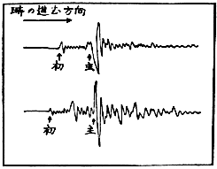
Ⅸ初期微動と主要動との區別
つぎに、最初
の一瞬間
の感覺
によつて地震
の大小
強弱
を判斷
する事
について述
べて見
たい。諺
に大風
は中頃
が弱
くて初
めと終
りとが強
く、大雪
は初
めから中頃
まで弱
くて終
りが強
く、大地震
は、初
めと終
りが弱
くて中頃
が強
いといふことがある。これは面白
い比較觀察
だと思
ふ。大風
と大雪
とはさて置
いて、大地震
についていはれた右
の諺
は一般
の地震
に通
ずるものである。われ〳〵は最初
の弱
い部分
を初期微動
と名
づけ、中頃
の強
い部分
を主要動
或
は主要部
、終
りの弱
い部分
を終期部
と名
づけてゐる。終期部
は地震動
の餘波
であつて餘
り大切
なものではないが、初期微動
と主要部
とは極
めて大切
なものである。兩者
ともに震原
から同時
に出發
し、同
じ途
を通
つて來
るのであるけれども、初期微動
は速度
大
に、主要動
はそれが小
なるために斯
く前後
に到着
することになるのである。恰
も電光
と雷鳴
との關係
のようなものである。
もつと具體的
にいふならば、初期微動
は空氣中
に於
ける音波
のような波動
であつて、振動
の方向
と進行
の方向
とが相
一致
するもの、即
ち形式
からいへば縱波
である。主要動
はそれと異
なり横波
である。震原
の近
い場合
には縱波
は凡
そ毎秒
五粁
の速
さで進行
するのに、横波
は毎秒
三・二粁
の速
さで進行
する。
初期微動
が到着
してから主要動
が來
るまでの時間
を、初期微動繼續時間
と名
づける。讀者
は初期微動時間
だけを知
つて震原距離
を計算
して出
すことは、算術
のたやすい問題
たることを氣附
かれたであらう。實際
われ〳〵はこの計算
［＃ルビの「けいさん」は底本では「けいさい」］
に一
つの公式
を用
ひてゐる。即
ち初期微動繼續時間
の秒數
に八
といふ係數
を掛
けると、震原距離
の凡
その値
が粁
で出
て來
るのである。
地震計
の觀測
によるときは、初動
の方向
も觀測
せられるので、隨
つて震原
の方向
が推定
せられ、又
初期微動繼續時間
によつて震原距離
が計算
せられるから、單
に一箇所
の觀測
のみによつて震原
の位置
が推定
せられるのであるが、しかしながら身體
の感覺
のみにてはかような結果
を得
ることは困難
である。
東京邊
で起
る普通
の小地震
は、大抵
四十粁
位
の深
さをもつてゐるから、かような地震
がわれ〳〵の直下
に起
つても、初期微動繼續時間
は五・三秒程
になる。東京市内
に住
むものは、七八秒
から十秒位
までの初期微動
を有
する地震
を感
ずることが最
も多數
である。然
しながら大正十四年
の但馬地震
に於
ける田結村
の場合
の如
く、又
一昨年
の丹後地震
に於
ける郷村
又
は峰山
の場合
の如
く、初期微動繼續時間
僅
に三秒程度
なることもあるのである。但
しこれは極
めて稀有
な場合
であつたといつてよろしい。
初期微動
は主要動
に比較
して大
なる速
さを持
つてゐるが、然
しながら振動
の大
いさは、反對
に主要動
の方
が却
つて大
である。この大小
の差違
は地震
の性質
により、又
關係地方
の地形
地質
等
によつても一樣
ではないが、多數
の場合
を平均
していふならば、主要動
たる横波
は、初期微動
たる縱波
に比較
して凡
そ十倍
の大
いさを持
つてゐる。これが最初
の部分
に初期微動
とて微
の字
が冠
せられる所以
である。さうして主要動
が大地震
の場合
に於
て、破壞作用
をなす部分
たることは説明
せずとも既
に了得
せられたことであらう。
讀者
は小地震
の場合
に於
て、初期微動
と主要動
を明確
に區別
して感得
せられたことがあるであらう。初期微動
は通常
びり〳〵といふ言葉
で形容
せられるように、稍
急
にしかも微小
な振動
であるが、それが數秒間
或
は十數秒間
繼續
すると、突然
主要動
たる大
きな振動
が來
る。其振動
ぶりは、最初
の縱波
に比
べて稍
緩漫
な大搖
れであるがため、われ〳〵はこれをゆさ〳〵といふ言葉
で形容
してゐる。然
しながら大地震
になると、初期微動
でも決
して微動
でなく、多
くの人
にとつては幾分
の脅威
を感
ずるような大
いさの振動
である。例
へばわれ〳〵が大地震
の場合
に於
て屢
經驗
する通
り主要動
の大
いさを十糎
と假定
すれば、初期微動
は一糎程度
のものであるので、もしかういふ大
いさの地動
が、一秒間
に二三回
も繰返
されるほどの急激
なものであつたならば、木造家屋
や土藏
の土壁
を落
し、器物
を棚
の上
から轉落
せしめる位
のことはあり得
べきである。もし地震
の初動
がこの程度
の強
さを示
したならば、これは非常
の地震
であると判斷
して誤
りはないであらう。
幸
に最初
の一瞬間
に於
て、非常
の地震
なるか否
かの判斷
がついたならば、其判斷
の結果
によつて臨機
の處置
をなすべきである。もしそれが非常
の地震
だと判斷
されたならば、自分
の居所
の如何
によつて處置方法
が變
られなければなるまい。それについては、以下
の各項
に於
て細説
するつもりである。然
しながら、それがありふれた小地震
だと判斷
されたならば、泰然自若
としてゐるのも一法
であらうけれども、これは餘
りに消極的
の動作
であつて、著者
が地震國
の小國民
に向
つて希望
する所
でない。著者
は寧
ろかような場合
を利用
して、地震
に對
する實驗的
［＃ルビの「じつけんてき」は底本では「じんけんてき」］
の知識
を得
、修養
を積
まれるよう希望
するものである。
前
に述
べた通
り、初期微動
の繼續時間
は震原距離
の計算
に利用
し得
られる。この繼續時間
の正確
なる値
は地震計
の觀測
によつて始
めて分
ることであるけれども、概略
の値
は暗算
によつても出
て來
る。著者
の如
きはそれが常習
となつてゐるので、夜間
熟睡
してゐるときでも地震
により容易
に覺醒
し、夢
うつゝの境涯
にありながら右
の時間
の暗算
等
にとりかかる癖
がある。これを器械的觀測
の結果
に比較
すると一割以上
の誤差
を生
じた例
は極
めて少
い。著者
は更
に進
んで地震動
の性質
を味
はひ、それによつて震原
の位置
をも判斷
することに利用
してゐるけれども、これは一般
の讀者
に望
み得
べきことでない。とに角
、初期微動繼續時間
を始
めとして、發震時
其他
に關
する値
を計測
し、これを器械觀測
の結果
に比較
する事
は頗
る興味
多
いことである。自分
と觀測所
との間隔
が一二里以内
であるならば、兩方
の時刻
竝
に時間
共
に大體
同
じ値
に出
て來
るべきはずである。
右
の外
、體驗
した地震動
の大
いさを器械觀測
の結果
に比較
するのも亦
興味
ある事柄
である。然
しながらこの結果
に於
ては器械
で觀測
せられたものと、自分
の體驗
したものとは著
しき相違
のあることが一般
であつて、それが寧
ろ至當
である場合
が多
い。例
へば東京市内
でも下町
と山
の手
とで震動
の大
いさに非常
な相違
がある。概
して下町
の方
が大
きく、山
の手
の二三倍
若
しくはそれ以上
にもなることがある。又
鎌倉
の例
を取
ると由比ヶ濱
の砂丘
は、雪
の下
の岩盤
に比較
して四五倍
の大
いさに出
て來
ることもある。かような根本
の相違
がある上
に、器械
は大抵
地面
其物
の震動
を觀測
する樣
になつてゐるのに、體驗
を以
て測
つてゐるのは家屋
の振動
であることが多
い、もし其家屋
が丈夫
な木造
平家
であるならば、床上
の振動
は地面
のものゝ三割
増
しなることが普通
であるけれども、木造
二階建
の階上
は三倍程度
なることが通常
である。この通
りに器械觀測
の結果
と體驗
の結果
とは最初
から一致
し難
いものであるけれども、それを比較
してみることは無益
の業
ではない。上手
にやると自分
の家屋
の耐震率
とも名
づくべきものゝ概念
が得
られるであらう。即
ち二階建
の二階座敷
は階下座敷
の五倍
に搖
れるようならば、不安定
な構造
と判斷
しなければならないが、もし僅々
二倍位
にしか搖
れないならば、寧
ろ堅牢
な建物
と見做
してよいであらう。
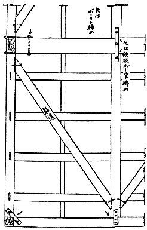
Ⅸ耐震的構造
地震
に出會
つてそれが非常
の地震
であることを意識
したものは、餘程
修養
を積
んだ人
でない限
り、たとひ耐震家屋内
にゐても、又
屋外避難
の不利益
な場合
でも、しかせんと力
めるであらう。この屋外
へ避難
することの不利益
な場合
は次項
に説明
することゝし、もし平家建
の家屋内
或
は二階建
、三階建
等
の階下
に居合
せた場合
には屋外
へ飛
び出
す方
が最
も安全
であることがある。然
しながらいづれの場合
でもさうであるとは限
らぬ。先
づ屋外
が狹
くて、もし家屋
が倒潰
したならば却
つて其
ために壓伏
されるような危險
はなきか。これが第一
に考慮
すべき點
である。
平家建
の小屋組
、即
ち桁
や梁
と屋根
との部分
が普通
に出來
てゐれば容易
に崩
れるものではない。たとひ家屋
が倒伏
することがあつても、小屋組
だけは元
のまゝの形
をして地上
に直接
の屋根
を現
すことは、大地震
の場合
普通
に見
る現象
である。かような場合
、下敷
になつたものも、梁
又
は桁
のような大
きな横木
で打
たれない限
り大抵
安全
である。
一方
屋外
に避難
せんとする場合
に於
ては、まだ出
きらない内
に家屋
倒潰
し、而
も入口
の大
きな横木
に壓伏
せられる危險
が伴
ふことがある。前
に述
べた通
り、初期微動
の繼續時間
は概
して七八秒
はあるけれども、前記
の但馬地震
及
び丹後地震
に於
ては、震原地
の直上
に於
て三秒位
しかなかつた。かゝる場合
、家
の倒伏前
に屋外
の安全
な場所迄
逃
げ出
すことは中々
容易
な業
ではない。實際
前記
の大地震
に於
ては機敏
な動作
をなして却
つて軒前
で壓死
したものが多
く、逃
げ後
れながら小屋組
の下
に安全
に敷
かれたものは屋根
を破
つて助
かつたといふ。かような場合
を省
みると、屋外
へ避難
して可
なる場合
は、僅
に二三秒
で軒下
を離
れることが出來
るような位置
にあるときに限
るようである。もし偶然
かような位置
に居合
せたならば、機敏
に飛出
すが最上策
であること勿論
である。
右
のような條件
が完全
に備
はつてゐなくとも、大抵
の人
は屋外
に避難
せんとあせるに違
ひない。これは寧
ろ動物
の本能
であらう。目
の前
を何
か掠
めて通
るとき急
に瞼
を閉
ぢるような行動
と相
似
てゐる。
安政二年
十月二日
の江戸大地震
に於
て、小石川
の水戸屋敷
に於
て壓死
した藤田東湖先生
の最後
と、麴町
神田橋内
の姫路藩邸
に於
て壓死
した石本李蹊
翁
の最後
は全
く同
じ轍
を踏
まれたものであつた。此地震
の初期微動繼續時間
は七八秒程
あつたように思
はれる。各先生
共
に地震
を感得
せられるや否
や、本能的
に外
に飛
び出
されたが、はつと氣
が付
いてみると老母
が屋内
に取
り殘
されてあつた。とつて返
して助
け出
さうとする中
、主要動
のために家屋
は崩壞
し始
めたので、東湖
は突差
に母堂
を屋外
へ抛
り出
した瞬間
、家屋
は全
く先生
を壓伏
してしまつたが、李蹊
は母堂
と運命
を共
にしたのである。東湖先生
の最後
のありさまはよく人
に知
られてゐるが、石本李蹊
翁
のは知
る人
が少
い。翁
の令息
に有名
な石本新六男
があり、新六男
の四男
に地震學
で有名
な巳四雄教授
のあることは、李蹊
翁
も又
以
て瞑
するに足
るといはれてもよいであらう。
われ〳〵の崇敬
する偉人
でも、大地震
となると我
を忘
れて飛
び出
されるのであるから、二階建
、三階建
等
の階下
や平家建
の屋内
にゐた人
が逃
げ出
すのは、尤
もな動作
と考
へなければなるまい。前記
の但馬地震
や丹後地震
の如
きは初期微動繼續時間
の最
も短
かつた稀有
の例
であるので、寧
ろ例外
とみて然
るべきものである。それ故
に若
し數秒間
で廣場
へ出
［＃ルビの「だ」はママ］
られる見込
みがあらば、最
も機敏
にさうする方
が個人
として最上
［＃ルビの「さいじよう」は底本では「さいしよう」］
の策
たるに相違
ない。唯一
つ茲
に考慮
すべきは火
の用心
に關
する問題
である。地震
に伴
ふ火災
は地震直後
に起
るのが通常
であるけれども、地震後
一二時間
の後
に起
ることもある。避難
の際
、僅
に一擧手
の動作
によつて火
が消
されるようならば、さういふ處置
は望
ましきことであるが、もし其餘裕
なくして飛出
したならば、後
になつてからでも火
を消
［＃ルビの「けす」は底本では「け」］
ことに注意
すべきであつて、特
に今迄
ゐた家
が潰
れたときにさうである。これ著者
がこの項
の［＃「この項
の」はママ］
本文
に於
て、『但
し火
の元
用心
を忘
れざること』と附
け加
へた所以
である。
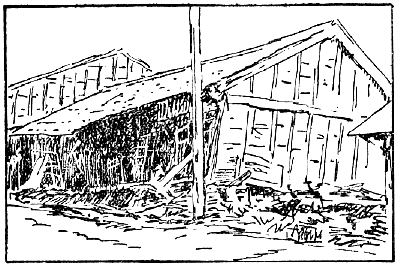
Ⅸ二階建の潰れ方（豐岡）
わが國
に於
ける三階建
は勿論
、二階建
も大抵
各階
の柱
が床
の部分
に於
て繼
がれてある。即
ち通
し柱
を用
ひないで大神樂造
りにしてある。かういふ構造
に於
ては、大
きな地震動
に對
して眞先
に傷
むのは最下層
である。更
に震動
が強
いと階下
の部分
が潰
れ、上層
の多
くは直立
の位置
の儘
に取殘
される。即
ち二階建
は平家造
りのように三階建
は二階建
のようなものになる。大正十四年
の但馬地震
に於
て、豐岡町
の被害状況
の概報
に、停車場
の前通
り四五町
の間
は町家
が將棊倒
しに潰
れたとあつたが、震災地
を始
めて見學
した一學生
は其實状
［＃ルビの「じつきよう」はママ］
を見
て、右
の概報
は誤
りだと思
つた。さうして著者
に向
つていふには、將棊倒
しどころか各家屋
直立
してゐるではありませんかと。著者
はこのとき彼
に反問
して、君
はこの町家
を平家建
と思
つてゐるかといつてみたが、該學生
が潰
れ方
の眞相
を了解
したのは、其状況
を暫時
熟視
した後
のことであつた。
大地震
の場合
に於
て、二階建
或
は三階建
等
の最下層
が最
も危險
であることは、更
に詳説
を要
しない程
によく知
られてゐる。それ故
に二階
或
は三階
に居合
せた人
が、階下
を通
ることの危險
を侵
してまで屋外
に逃
げ出
さうとする不見識
な行動
は排斥
すべきである。寧
ろ更
に上層
に上
るか、或
は屋上
の物干場
に避難
することを勸
めるのであるが、實際
かういふ賢明
な處置
を取
られた例
は屢
耳
にするところである。
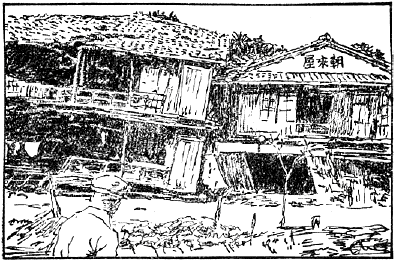
Ⅸ三階建の潰れ方（城崎）
著者
は明治二十七年
六月二十日
の東京地震
を本郷
湯島
に於
て、木造
二階建
の階上
で經驗
したことがある。此時
帝國大學地震學教室
に於
ける地動
は二寸
七分
の大
いさに觀測
せられたから、同
じ臺地
の湯島
に於
ても大差
なかつたはずと思
ふ。隨
つて階上
の動搖
は六七寸
にも達
したであらう。當時
著者
は大學
に於
ける卒業試驗
の準備中
でつて［＃「でつて」はママ］
、机
に向
つて靜座
してゐたが、地震
の初期微動
に於
て既
に土壁
が龜裂
しきれ〴〵になつて落
ちて來
るので、自
ら室
の中央部
まで動
いたけれども、それ以上
に歩行
することは困難
であつて、たとひ階下
へ行
かうなどといふ間違
つた考
へを起
しても、それは實行不可能
であつた。
大正十二年
九月一日
の關東大地震
に於
て、著者
のよく知
つてゐる某貴族
は、夫妻
揃
つて潰家
の下敷
となられた。當時
二人
とも木造家屋
の二階
にをられたので、下敷
になりながら小屋組
の空所
に挾
まり、無難
に救
ひ出
されたが、階下
にゐた家扶
は主人夫婦
の身
の上
を案
じながら辛
うじて、梯子段
を登
りつめたとき家
は潰
れてしまつた。もしこの家扶
が下座敷
にゐたまゝであつたならば無論
壓死
したであらうが、主人
思
ひの徳行
のために主人夫妻
［＃ルビの「ふうふ」はママ］
と共
に無難
に救
ひ出
されたのであつた。
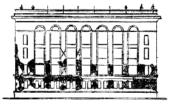
Ⅸ東京會館の破壞
近頃
わが國
にはアメリカ風
の高層建築物
が段々
増加
しつゝある。地震
に對
して其安全
さを危
ぶんでゐる識者
も多
い事
であるが、これは其局
に當
るものゝ平日
注意
すべきことであつて、小國民
の關與
すべき事
でもあるまい。然
しながら其
ような高
い殿堂
に近寄
ることや堂上
に昇
ることは年齡
に無關係
なことであるから、わが讀者
も偶
かような場所
に居合
せたとき大地震
に出會
ふようなことがないとも限
らぬ。かういふ種類
の建物
は設計
施工
によつて地震
に傷
められる模樣
が變
るけれども、多
くの場合
、地上階
は比較的
丈夫
に出來
てゐるため被害
が少
い、この點
は木造
の場合
に比較
して反對
な結果
を示
すのである。もし階數
が七
つ八
つ、高
さが百尺
程度
のものならば、二階
三階
或
は四階建
に傷
みが最
も著
しいようである。大正十一年
四月二十六日
の浦賀海峽地震
に傷
められた丸
の内
びるぢんぐ
、大正十二年
の關東大地震
によつて腰
を折
られた東京會館
などがその適例
であらう。いまかような高層建物
の上層
に居合
せた場合
、もし地震
に出會
つて屋外
に避難
せんと試
みたなら、それは恐
らくは地震
がすんでしまつた頃
に到達
せられる位
のことであらう。それ故
にかような場合
に於
ては、屋外
へ出
ることを斷念
し屋内
に於
て比較的
安全
な場所
を求
めることが寧
ろ得策
であらう。
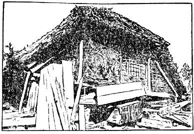
Ⅸ屋根を支へる家具
大地震
に出會
つて屋外
への安全
な避難
が間
に合
はない場合
は、家屋
の潰
れること、壁
の墜落
、煙突
の崩壞
などを覺悟
し、又
木造家屋
ならば下敷
になつた場合
を考慮
して、崩壞
又
は墜落物
の打撃
から免
れ得
るような場所
に一時
避難
するがよい。普通
の住宅
ならば椅子
、衣類
で充滿
した簞笥
、火鉢
、碁盤
、將棊盤
など、總
て堅牢
な家具
ならば身
を寄
せるに適
してゐる。これ等
の適例
は大地震
の度毎
にいくらも見出
される。
教場内
に於
ては机
の下
が最
も安全
であるべきことは説明
を要
しないであらう。下敷
になつた場合
に於
て、致命傷
を與
へるものは梁
と桁
とである。それさへ避
けることが出來
たなら大抵
安全
であるといつてよい。さうして學校
の教場内
に竝列
した多數
の机
や或
は銃器臺
などは、其連合
の力
を以
て、此桁
や梁
、又
は小屋組
全部
を支
へることは容易
である。
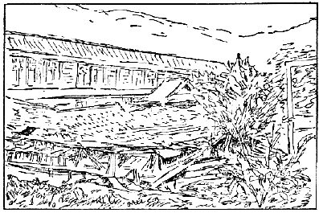
Ⅸ田根小學校の教室倒潰
圖
は明治四十二年
八月十四日
姉川大地震
に於
て倒潰
の憂
き目
を見
た、田根小學校
の教場
である。讀者
は墜落
した小屋組
が、其連合
の力
を以
ていかに完全
に支
へられたかを見
られるであらう。この地震
の時
は、丁度
夏季休暇中
であつたため、一人
の生徒
もゐなかつたのであるが、假
に授業中
であつたとして、もしそれに善處
せんとするならば、「机
の下
へしやがめ」の號令一下
で十分
であつたらう。さうして家
の潰
れ方
が圖
に示
された通
りであつたならば、生徒中
に一人
の負傷者
も出來
ず、「しやがんだまゝ外
へ出
よ」との第二號令
で、全員
秩序
を亂
さず、平日
教場
へ出入
するのと餘
り違
はない態度
で校庭
へ現
れ出
ることが出來
たであらう。
木造家屋
に對
しては、處置
が比較的
に容易
であるが、重
い洋風建築物
であると、さう簡單
にはゆかぬ。第一
墜落物
も張壁
、煖爐用煙突
など、いづれも重量
の大
なるものであるから、机
や椅子
では支
へることが困難
である。しかし室
は比較的
に廣
く作
られるのが通常
であるから、右
のようなものゝ落
ちて來
さうな場所
から遠
ざかることも出來
るであらう。廣
い室
ならば、其中央部
、もしくは煙突
の立
てる反對
の側
など、稍
それに近
い條件
であらう。若
し室内
にて前記
の如
き條件
の場所
もなく、又
は廊下
に居合
せて、兩側
の張壁
からの墜落物
に挾
み撃
ちせられさうな場合
に於
ては、室
の出入口
の枠構
へが、夕立
に出會
つたときの樹陰位
の役
を勤
めるであらう。
地震
の當初
から屋外
にゐた者
も、周圍
の状況
によつては必
ずしも安全
であるとはいはれない。又
容易
に屋内
から逃
げ出
すことが出來
ても、立退
き先
の方
が却
つて屋内
よりも危險
であるかも知
れない。石垣
、煉瓦塀
、煙突
などの倒潰物
は致命傷
を與
へる事
もあるからである。又
家屋
に接近
してゐては、屋根瓦
、壁
の崩壞物
に打
たれることもあるであらう。
石燈籠
は餘
り強大
ならざる地震
の場合
にも倒
れ易
く、さうして近
くにゐたものを壓死
せしめがちである。特
に兒童
が顚倒
した石燈籠
のために生命
［＃ルビの「せつめい」はママ］
を失
つた例
は頗
る多
い。これは兒童
の心理作用
に基
づくものゝようであるから、特
に父兄
、教師
の注意
を要
する事
であらう。元來
神社
、寺院
には石燈籠
が多
い。さうして其處
は多
く兒童
の集
る所
である。そこで偶
地震
でも起
ると兒童
は逃
げ惑
ひ、そこらにある立木
或
は石燈籠
にしがみつく。これは恐
らくかういふ場合
、保護者
の膝
にしがみつく習慣
から斯
く導
かれるものであらう。それ故
餘
り大
きくない地震
、例
へば漸
く器物
を顚倒
し土壁
を損
し粗造
な煉瓦
煙突
を損傷
するに止
まる程度
に於
ても、石燈籠
の顚倒
によつて兒童
の壓死者
を出
すことが珍
しくない。此事
は教師
父兄
の注意
を促
すと共
にわが小國民
に、向
つても直接
に戒
めて置
きたいことである。
わが國
の大地震
は激震區域
の廣
いと狹
いとによつて、これを非局部性
のものと、局部性
のものとに區別
する事
が出來
る。非局部性
の大地震
は多
く太平洋側
の海底
に起
［＃ルビの「し」はママ］
り、地震
の規模
廣大
なると陸地
が震原
から遠
いために、はたまた海底地震
の性質
として震動
は大搖
れであるが、然
しながら緩漫
である。それと同時
に津浪
を伴
ふことが其特色
である。これに反
して局部性
の大地震
は規模
狹小
であるが、多
く陸地
に起
るがために震動
の性質
が急激
である。近
く其例
をとるならば、大正十二年
の關東大地震
は非局部性
であつて、大正十四年
の但馬地震
及
び昭和二年
の丹後地震
は局部性
であつた。
非局部性
の大地震
を起
す事
のある海洋底
に接
した海岸地方
は、大搖
れの地震
に見舞
はれた場合
、津浪
についての注意
を要
する。但
し津浪
を伴
ふ程
の地震
は最大級
のものであるから、倒潰家屋
を生
ずる區域
［＃ルビの「くえき」はママ］
が數箇
の國
や縣
に亙
ることもあり、或
は震原距離
［＃ルビの「りより」はママ］
が陸地
から餘
り遠
いために、單
に廣區域
に亙
つて大搖
れのみを感
じ、地震
の直接
の損害
を生
じないこともある。前者
の例
は大正十二年
の關東大地震
、或
は安政元年
十一月四日
及
び同五日
の東海道
、南海道大地震
等
であつて、後者
の例
としては明治二十九年
六月十五日
の三陸大津浪
を擧
げることが出來
る。
かくしてわが國
の大平洋側
の［＃「大平洋側の」はママ］
沿岸
は非局部性
の大地震
を起
す海洋底
に接
してゐるわけであるが、しかしながら其海岸線
の全部
が津浪
の襲來
に暴露
されてゐるわけではない。それについては津浪襲來
の常習地
といふものがある。この常習地
は右
に記
したような地震
に見舞
はれた場合
、特別
の警戒
を要
するけれども、其他
の地方
に於
ては左程
の注意
を必要
としないのである。
右
の話
を進
めるについて必要
なのは津浪
の概念
である。津浪
に海嘯
なる文字
がよくあててあるがこれは適當
でない。海嘯
は潮汐
の干滿
の差
の非常
に大
きな海
に向
つて、河口
が三角
なりに大
きく開
いてゐる所
に起
る現象
である。支那
淅江省
の［＃「淅江省の」はママ］
錢塘江
は海嘯
について最
も有名
である。つまり河流
と上汐
とが河口
で暫時
戰
つて、遂
に上汐
が勝
を占
め、海水
の壁
を築
きながらそれが上流
に向
つて勢
よく進行
するのである。津浪
とは津
の浪
、即
ち港
に現
れる大津浪
であつて、暴風
など氣象上
の變調
から起
ることもあるが、最
も恐
ろしいのは地震津浪
である。元來
浪
といふから讀者
は直
に風
で起
される波
を想像
せられるかも知
れないが、寧
ろ潮
の差引
といふ方
が實際
に近
い。われ〳〵が通常
みるところの波
は、其山
と山
との間隔
、即
ち波長
が幾米
、或
は十幾米
といふ程度
にすぎないが、津浪
の波長
は幾粁
、幾十粁
、或
は幾百粁
といふ程度
のものである。それ故
に海上
に浮
んでゐる船舶
には其存在
又
は進行
が分
りかねる場合
が多
い。但
しそれが海岸
に接近
すると、比較的
に急
な潮
の干滿
となつて現
れて來
る。即
ち普通
の潮汐
は一晝夜
に二回
の干滿
をなすだけであつて、隨
つて其週期
は凡
そ十二時間
であるけれども、津浪
のために生
ずる干滿
は幾分
或
は幾十分
の週期
を以
て繰返
されるのである。
かういふ長波長
の津浪
が海底
の大地震
によつていかにして起
されるかといふに、それは多
く海底
の地形變動
に基
づくのである。われ〳〵は近
く關東大地震
に於
て、相模灣
の海底
が廣
さ十里四方
の程度
に於
て、幾米
の上下變動
のあつたことを學
んだ。さういふ海底
の地形變動
は直
に海水面
の變動
を惹起
すから、そこに長波長
の津浪
が出來
るわけである。
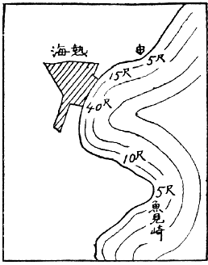
Ⅸ熱海における津浪の高さ
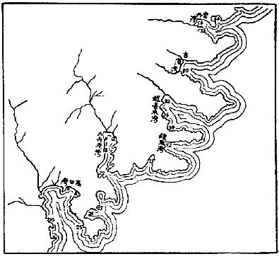
Ⅸ三陸大津浪高さの分布（數字は高さを尺にて表したもの）
かういふ津浪
は沖合
に於
ては概
して數尺
の高
さしか持
たないから、もしそれが其
まゝの高
さを以
て海岸
に押寄
せたならば、大抵
無難
なるべきはずである。しかし、波
は海深
が次第
に淺
くなる所
に進入
すると、それにつれて高
さを増
し、又
漏斗
のように奧
が次第
に狹
くなる所
に進入
しても波
の高
さが増
してくる。かういふ關係
が重
なるような場所
に於
ては、津浪
の高
さが著
しく増大
するわけであるが、それのみならず、浪
が淺
い所
に來
れば遂
に破浪
するに至
ること、丁度
普通
の小
さな波
について濱
に於
て經驗
する通
りであるから、此状態
になつてからは、浪
といふよりも寧
ろ流
れといふべきである。即
ち海水
が段々
狹
くなる港灣
に流
れ込
むことになり、隨
つて沖合
では高
さ僅
に一二尺
にすぎなかつた津浪
も、港灣
の奧
に於
ては數十尺
の高
さとなるのである。大正十二年
の關東大地震
に於
て熱海港
の兩翼
、即
ち北
は衞戍病院分室
のある邊
、南
は魚見崎
に於
ては波
の高
さ四五尺
しかなかつたが、船着場
では十五尺
、港
の奧
では四十尺
に達
して多
くの家屋
を浚
ひ人命
を奪
つた。但
し港
の奧
ではかような大事變
を起
してゐるに拘
らず數十町
の沖合
では全
くそれに無關係
であつて當時
そこを航行中
であつた石油發動機船
が海岸
に於
けるかゝる慘事
を想像
し得
なかつたのも無理
のないことである。明治二十九年
の三陸大津浪
は、其原因
數十里
の沖合
に於
ける海底
の地形變動
にあつたのであるが、津浪
の常習地
たる漏斗状
［＃ルビの「じようごがた」はママ］
の港灣
の奧
に於
ては圖
に示
された通
り、或
は八十尺
、或
は七十五尺
といふような高
さの洪水
となり、合計
二萬七千人
の人命
を奪
つたのに、港灣
の兩翼端
では僅
に數尺
にすぎない程
のものであつたし、其夜
沖合
に漁獵
に行
つてゐた村人
は、あんな悲慘事
が自分
の村
で起
つたことを夢想
することも出來
ず、翌朝
、跡方
もなく失
はれた村
へ歸
つて茫然自失
［＃ルビの「ぼうせん」はママ］
したといふ。
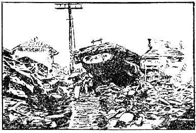
Ⅸ伊東の津浪
右
の通
り、津浪
は事實上
に於
て港
の波
である。われ〳〵は學術的
にもこの名前
を用
ひてゐる。實
に津浪
なる語
は、最早
國際語
となつた觀
がある。
以上
の説明
によつて、津浪襲來
の常習地
の概念
が得
られたことゝ思
ふ。屢
海底
の大地震
を起
す場所
に接
し、そこに向
つて大
きく漏斗形
に開
いた地形
の港灣
がそれに當
るわけであるが、これに次
いで多少
の注意
を拂
ふべきは、遠淺
の海岸
である。たとひ海岸線
が直線
に近
くとも、遠淺
だけの關係
で、波
の高
さが數倍
の程度
に増
すこともあるから、もし沖合
に於
ける高
さが數尺
のものであつたならば、前記
の如
き地形
の沿岸
に於
て多少
の被害
を見
ることもある。
津浪
に傷
められた二階建
、三階建
の木造家屋
は、大地震
に傷
められた場合
の如
く、階下
から順番
に潰
れて行
く。又
津浪
に浚
はれた場合
に於
て、其港灣
の奧
に接近
した所
では潮
の差引
が急
であるから、游泳
も思
ふように行
かないけれども、港灣
の兩翼端
近
くにてはかような事
がないから、平常通
りに泳
ぎ得
られる。この前
の關東大地震
に際
し、熱海
で津浪
に浚
はれたものゝ中
、伊豆山
の方
へ向
つて泳
いだものは助
かつたといふ。
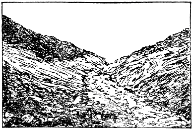
Ⅸ根府川の山津浪
地震
の場合
に崖下
の危險
なことはいふまでもない。横須賀停車場
の前
に立
つたものは、其處
の崖下
に石地藏
の建
てるを氣
づくであらう。これは關東大地震
の際
、其處
に生埋
めにされた五十二名
の不幸
な人
の冥福
を祈
るために建
てられたものである。かような危險
は直接
の崖下
許
りでなく、崩壞
せる土砂
が流
れ下
る地域
全部
がさうなのである。崩壞
した土砂
の分量
が大
きくて、百米立方
、即
ち百萬
立方米
の程度
にもなれば、斜面
を沿
うて流
れ下
るありさまは、溪水
が奔流
する以上
の速
さを以
て馳
せ下
るのである。恰
も陸上
に於
ける洪水
の如
き觀
を呈
するので山津浪
と呼
ばれるようになつたものであらう。
關東大地震
の場合
に於
ては、各所
に山津浪
が起
つたが、其中
根府川
の一村
を浚
つたものが最
も有名
であつた。この山津浪
の源
は根府川
の溪流
を西
に溯
ること六粁
、海面
からの高
さ凡
そ五百米
の所
にあつたが、實際
は數箇所
からの崩壞物
が一緒
に集合
したものらしく、其分量
は百五十米立方
と推算
せられた、これが勾配
九分
の一
の斜面
に沿
ひ、五分時間位
の間
に一里半程
の距離
を馳
せ下
つたものらしい。さうして根府川
の一村落
は崖上
の數戸
を殘
して、五百
の村民
と共
に其下
に埋沒
されてしまつた。此際
鐵道橋梁
も下
り汽車
と共
に浚
はれてしまつたが、これは土砂
に埋
つたまゝ海底
まで持
つて行
かれたものであることが解
つた。其後
山津浪
が殘
した土砂
が溪流
のために次第
に浚
はれて、再
び以前
の村落地
を暴露
したけれども、家屋
は其處
から現
れて來
なかつたので、山津浪
が一村
を埋沒
したといふよりも、これを浚
つて行
つたといふ方
が適當
なことが後日
に至
つて氣附
かれた。
山津浪
はかの丹後地震
の場合
にも起
つた。それは主
に海岸
の砂丘
に起
つたものであつて根府川
の山津浪
とは比較
にならなかつたけれども、雪崩
れ下
つた距離
が五六町
に及
び、山林
、田園
道路
に可
なりな損害
［＃ルビの「そんがん」はママ］
を與
へた。此地方
の砂丘
は地震
ならずとも崩壞
することがあるのだから、地震
に際
して注意
すべきは當然
であるけれども、平日
に於
ても氣
をつけ、特
に宅地
として選定
するときに考慮
しなければならぬ弱點
を持
つてゐるのである。
昔
の人
は地震
の搖
り返
し、或
は搖
り戻
しを恐
れたものである。此言葉
は俗語
であるため誤解
を惹起
し、今
の人
はこれを餘震
に當
て嵌
めてゐるが、それは全
く誤
りである。昔
の人
の所謂
搖
り戻
しは、われ〳〵が今日
唱
へてゐる地震動
の主要部
である。藤田東湖先生
の最後
を記
すならば、彼
は最初
の地震
によつて屋外
へ飛出
し、搖
り戻
しのために壓死
したのである。われ〳〵は子供
の時分
には然
か教
へられた。最初
の地震
を感
じたなら、搖
り戻
しの來
ない中
に戸外
へ飛出
せなどと戒
められたものである。外國
の大地震
では搖
り戻
しといはずして、第二
の地震
と唱
へた場合
がある。つまり初期微動部
、主要部
を合併
して一箇
の地震
と見
ないで、これを一々
別
なものと見做
したのである。かくして西暦
紀元
千七百五十五年
のリスボン地震
の記事
がよく了解
せられる。
搖
り戻
しと［＃「 搖
り戻
しと」は底本では「搖
り戻
しと」］
餘震
との混同
は單
に言葉
の上
の誤
りとして、其儘
これを片附
けるわけにはゆかぬ。わが國
に於
ては餘震
を恐怖
する念
が特
に強
いが、それは右
の言葉上
の誤
りによりても培養
せられてゐるのである。
昔
の人
の言葉
を借
りていふならば、大地震
に家
の潰
れるのは、皆
搖
り戻
しに由
るのである。もし此
搖
り戻
しを餘震
だと解
したならば餘震
は最
も恐
ろしいものでなければならぬ。そこに理論上
又
は經驗上
全
く恐
れるに足
りない餘震
を、誤
つて恐怖
するようにもなつたのである。
餘震
の勢力
、或
は地震動
としての破壞力
は、最初
の本地震
と比較
して微小
なものでなければならぬ。多
くの實例
に徴
するも其最大
なる場合
でも十分
の一
以下
である。この事
は最後
の項
に於
て再説
することだから茲
には説明
を略
するが、とに角
餘震
は恐
れるに足
りない。唯
恐
るべきは最初
の大地震
の主要動
である。然
しながら、どんな地震
でも其最
も恐
るべき主要動
は、最初
の一分時間
に於
て收
まつてしまふのである。此一分間
といつたのは、最
も長引
く場合
を顧慮
［＃ルビの「こうりよ」はママ］
してのことであつて、大抵
の場合
に於
ては二十秒間位
で危險
な震動
は終
りを告
げるものである。即
ち明治二十七年
六月二十日
の東京地震
は最初
から十五秒間
で著
しい震動
は終
りを告
げ、大正十四年
の但馬地震
は二十秒間
で全部
殆
んど收
まり、昭和二年
の丹後地震
も大抵
十數秒間
で主要震動
がすんでしまつた。但
し大正十二年
の關東大地震
は主要震動
が長
く續
き、最初
から二三十秒間
で收
まつたとはいへない。此事
は該地震
を經驗
した地方
により、多少
の相違
があるべきであるが、比較的
に長
く續
いたと思
はれる東京
にての觀測
の結果
を擧
げるならば、震動
の最
も強
かつたのは最初
から［＃「最初
から」は底本では「最切
から」］
十六七秒目
であつて、それから後
三十秒間位
は、震動
が却
つて大
きくなつた位
である。けれども往復震動
は急
に緩慢
となつたゝめ、地動
の強
さは次第
に衰
へてしまつた。鎌倉
や小田原邊
でも、最
も激
しかつたのは最初
の一分間以内
であつたといへる。
右
のような次第
であるから、大地震
に出會
つたなら、最初
の二三十秒間
、場合
によつては一分間位
は、その位置環境
によつては畏縮
せざるを得
ないこともあらう。勿論
崩壞
の虞
れなき家屋
の内
にゐるとか、或
は廣場
など安全
な場所
に居合
せたなら畏縮
する程
のこともないであらう。また餘震
の恐
れるに足
らないこともほゞ前
に述
べた通
りである。かくして最初
の一分間
を凌
ぎ得
たならば、最早
不安
に思
ふべき何物
も殘
さないはずであるが、唯
これに今一
つ解説
して置
く必要
のあるものは、地割
れに對
して誤
れる恐怖心
である。
大地震
のときは大地
が裂
けてはつぼみ、開
いては閉
ぢるものだとは、昔
から語
り傳
へられて最
も恐怖
されてゐる一
つの假想現象
である。もし此
裂
け目
に挾
まると、人畜
牛馬
、煎餅
のように押
し潰
されるといはれ、避難
の場所
としては竹藪
を選
べとか、戸板
を敷
いてこれを防
げなどと戒
められてゐる。これはわが國
にてはいかなる寒村
僻地
にも普及
してゐる注意事項
であるが、かような地割
れの開閉
に關
する恐怖
は世界
の地震地方
に共通
なものだといつてよい、然
るにわが國
の地震史
には右
のような現象
の起
つたことの記事
皆無
であるのみならず、明治以後
の大地震調査
に於
ても未
だかつて氣附
かれたことがない。尤
も道路
或
は堤防
が搖
り下
りに因
つて地割
れを起
すこともあるが、それは單
に開
いたまゝであつて、開閉
を繰返
すものではない。又
構造物
が地震動
に因
つて裂
け目
を生
じ、それが振動繼續中
開閉
を繰返
すこともあるが、問題
は大地
に關係
したものであつて、構造物
に起
る現象
を指
すのではない。とに角
人畜
が吸
ひ込
まれる程度
に於
て、大地
が開閉
するといふことは、わが國
に於
ては決
して起
り得
ない現象
と見
てよい。
日本
に於
て決
して起
らない現象
が、なぜに津々浦々
まで語
り傳
へられ、恐怖
せられてゐるのであらうか。著者
は初
め此話
が南洋傳來
のものではあるまいか、と疑
つてみたこともあるが、近頃
研究
の結果
、さうでないように思
はれて來
たのである。
世界
の大地震記録
を調
べてみると、かういふ恐
ろしい現象
が三所
に見出
される。これを年代
の順
に記
してみると、第一
は西暦
千六百九十二年
六月七日
西
インド諸島
の中
、ジャマイカ島
に起
つた地震
であつて、このとき首府
ロアイヤル港
に於
ては大地
に數百條
の龜裂
が出來
、それがぱく〳〵開
いたり閉
ぢたりするので、偶
これに陷
つた人畜
は忽
ち見
えなくなり、再
びその姿
を現
すことは出來
なかつた。後
で掘
り出
してみると、いづれも板
のように押
し潰
されてゐたといふ。此時
市街地
の大部
は沈下
して海
となつたといふことも記
してあるから、前記現象
の起
つた場所
は新
しい地盤
たりしに相違
なかるべく、埋立地
であつたかも知
れない。又
此時
の死人
は首府
總人口
の三分
の二
を占
めたことも記
されてあるから、地震
が餘程
激烈
であつたことも想像
される。
西暦
千七百五十五年
十一月一日
のリスボンの大地震
は規模
頗
る廣大
なものであつて、感震區域
は長徑
五百里
に亙
り、地動
の餘波
によつて、スコットランド、スカンヂナビヤ邊
に於
ける湖水
の氾濫
を惹起
したものである。此時
リスボンには津浪
も襲來
し、こゝだけの死人
でも六萬人
に上
つた。震原
は大西洋底
にあつたものであらう。津浪
は北
アメリカの東海岸
に於
ても氣附
かれた。
此地震
の場合
に於
て、大地
の開閉
を起
した所
は、リスボンの對岸
、アフリカのモロッコ國
の首府
モロッコから三里
ほど離
れた一部落
であつて、そこにはベスンバ種族
と呼
ばれる土民
が住
まつてゐた。この時
大地
の開閉
によつて土民
は勿論
、彼等
の飼
つてゐた畜類
は牛馬
、駱駝
等
に至
るまで盡
くそれに吸
ひ込
まれ、八千
乃至
一萬
の人口
を有
してをつたこの部落
は其
ために跡方
もなく失
はれたといふ。此地震史上
の大事件
の舞臺
が未開
の土地
であるだけに、記事
に確信
を置
くわけにも行
かないが、これを載
せた書物
は地震直後
に出版
された『千七百五十五年
十一月一日
のリスボン大地震
』と題
するもので、歐洲
に於
ける當時
の知名
の科學者
十名
の論文
を集
めたものである。
大地開閉
の記事
を載
せた第三
の地震
は西暦
千七百八十三年
イタリー國
カラブリヤに起
つたものであつて、地震
に因
る死者
四萬
、それに續
いて起
つた疫病
に因
る死者
二萬
と數
へられたものである。場所
は長靴
の形
に譬
へられたイタリーの足
の中央部
に當
つてゐる。この時
中央
山脈
の斜面
に沿
うて堆積
してゐた土砂
が全體
として山骨
を離
れ、それが斜面
を流
れ下
る際
曲
り目
の所
に於
て、雪崩
れの表面
が或
は開
いたり、或
は閉
ぢたりしたものゝようであるが、此
開
き口
に人畜
が陷
つて見
えなくなつたことが記
されてある。或
は又
開
いたままに殘
つた地割
れもあつたが、後
で檢査
して見
ると、其深
さは計測
することが出來
ない程
のものであつたといふ。關東大地震
のとき起
つた根府川
の山津浪
は、其
雪崩
れ下
る際
、右
のような現象
が或
は小規模
に起
つたかも知
れない。
世界大地震
の記事
に於
て、人畜
を吸
ひ込
むほどの地割
れの開閉現象
が起
つたのは、著者
の鋭意
調
べた結果
、以上
の三回
のみである。此外
に幅
僅
に一二寸程
の地割
れが開閉
したことを記
したものはないでもないが、それも餘計
はない。一例
を擧
げるならば、西暦
千八百三十五年
の南米
チリ地震
である。此時
卑濕
の土地
に一二寸
の地割
れがいくらも出來
、それが開閉
して土砂
が吹出
したといふ。
右
のような小規模
の地割
れならば、大正十二年
の關東大地震
に於
ても經驗
せられた。場所
は安房國
北條町
北條小學校
の校庭
であつた。此學校
の敷地
は、數年前
に水田
を埋立
てゝ作
られたものであつて、南北
に長
き水田
の一區域
の中
に、半島
の形
をなして西
から東
へ突出
してゐた。さうしてこの水田
の東西南
の三方
は比較的
に堅
い地盤
を以
て圍
まれてゐる。かういふ構造
の地盤
であるから、地震
も比較的
に烈
しかつたであらう。誰
しも想像
し得
られる通
り、校舍
は新築
でありながら全部
潰
れてしまつた。わづかに身
を持
て免
れた校長以下
の職員
は這
ふようにして中庭
にまで出
ると、目前
に非常
な現象
が起
り始
めた。それは校庭
が南北
に二條
に龜裂
して、其處
から水柱
を二三間
の高
さに噴出
し始
めたのであつた。あとで龜裂
の長
さを計
つてみたら、延長
二十二間程
あつたから、此程
噴出
の景況
は壯觀
であつたに相違
ない。あれよ〳〵とみてゐると水煙
は急
に衰
へ裂
け口
も閉
ぢて噴出
一時
に止
まつてしまつたが、僅
に五六秒位
經過
した後
再
び噴
き出
し始
めた。かく噴
いては止
み噴
いては止
みすること五六回
にして次第
に衰
へ遂
に止
んでしまつた。跡
には所々
に小
さな土砂
の圓錐
を殘
し、裂口
は大抵
塞
がつて唯
細
い線
を殘
したのみである。著者
は事件
があつて二月
の後
に其場所
を見學
したが、土砂
の圓錐
の痕跡
は其時
までも見
ることが出來
た。さうしてこの現象
の原因
は、水田
の泥
の層
が敷地
と共
に水桶内
に於
ける水
の動搖
と同
じ性質
の震動
を起
し、校舍
の敷地
に當
る所
が蒲鉾
なりに持上
つて地割
れを生
じ、それが凹
んで下
つたとき地割
れが閉
ぢるようになつたものと考
へた。大地震
のとき、泥土層
や、卑濕
の土地
には長
い裂
け目
に沿
うて泥砂
を噴出
すことはありがちのことであるが、もし地震
の當時
に此現象
を觀察
することが出來
たならば、北條小學校々庭
に於
て實見
せられたようなものゝ多々
あることであらう。實
に北條小學校職員
によつてなされた前記現象
の觀察
は、地震學上
極
めて貴
いものであつた。
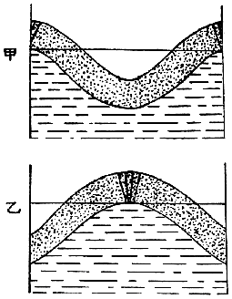
Ⅸ地割れ開閉の説明圖
前
に記
したジャマイカ地震
並
にリスボン地震
に於
ける地割
れの開閉
は、北條小學校
に起
つたような現象
が極
めて大規模
に起
つたものとすれば解釋
がつくように思
ふ。果
して然
らば、ロアイヤル港
や、昔
ベスンバ族
のゐた部落
は右
の現象
を起
すに最
も適當
な場所
であつて、此等
の地方
は他
の大地震
によつて再
び同樣
の現象
を起
すこともあるであらう。わが國
に於
て此現象
を未
だかつて大規模
に起
したことのないのは、單
に此現象
を起
すに適當
な構造
の場所
が存在
しないのに因
るものであらう。
右
の樣
な次第
であるから、著者
の結論
としては、地割
れに吸込
まれるような現象
は、わが國
にては絶對
に起
らないといふことに歸着
するのである。されば竹藪
に逃
げ込
めとか、戸板
を敷
いて避難
せよとかいふ注意
は餘
りに用心
すぎるように思
はれる。況
んや竹藪自身
が二十間
も移動
したことが明治二十四年
濃尾大地震
にも經驗
され、又
それを通
して大
きな地割
れの出來
た實例
はいくらもある位
であるから、左程
に重
きを置
かなくとも差支
へない注意
であるように思
ふ。
大地震
に遭遇
して最初
の一分間
を無事
［＃ルビの「ぶし」はママ］
に凌
ぎ得
たとし、又
餘震
や地割
れは恐
れるに足
らないものとの悟
りがついたならば、其後
災害防止
について全力
を盡
すことが出來
よう。此際
或
は倒壞家屋
の下敷
になつたものもあらうし、或
は火災
を起
しかけてゐる場所
も多
いことであらうし、救難
に出來
るだけ多
くの人手
を要
し、しかもそれには一刻
の躊躇
を許
されないものがある。これ老幼男女
の區別
を問
はず、一齊
に災害防止
に努力
しなければならない所以
である。
下敷
になつた人
を助
け出
すことは震災
の防止上
最
も大切
なことである。なんとなれば震災
を被
る對象物中
、人命
ほど貴重
なものはないからである。もしそこに火災
を起
す虞
れが絶對
になかつたならば、この問題
の解決
に一點
の疑問
も起
らないであらう。然
しながら、もしそこに火災
を起
す虞
れがあり、又
實際
に小火
を起
してゐたならば、問題
は全然
別物
である。
大正十四年
五月二十三日
の但馬地震
に於
て、震原地
に當
れる田結村
に於
ては、全村
八十三戸中
八十二戸
潰
れ、六十五名
の村民
が潰家
の下敷
となつた。この村
は半農半漁
の小部落
であるが、地震
の當日
は丁度
蠶兒掃立
の日
に當
り、暖室用
の炭火
を用
ひてゐた家
が多
く、その中
三十六戸
からは煙
を吐
き出
し、遂
に三戸
だけは燃
え上
るに至
つた。一方
では下敷
の下
から助
けを乞
ふてわめき、他方
では消防
の急
を告
ぐるさけび、これに和
して絶
え間
なき餘震
の鳴動
と大地
の動搖
とは、幸
に身
を以
て免
れたものには手
の下
しようもなかつたであらう。然
し村民
の間
にはかういふ非常時
に對
する訓練
がよく行屆
いてゐたと見
え、老幼男女
第一
に火災防止
に力
め、時
を移
さず人命救助
に從事
したのであつた。幸
に火
も小火
のまゝで消
し止
め、下敷
になつた六十五名中
、五十八名
は無事
に助
け出
されたが、殘
りの七名
は遺憾
ながら崩壞物
の第一撃
によつて即死
したのであつた。もし村民
の訓練
が不行屆
きであり、或
は火
を消
すことを第二
にしたならば、恐
らくは全村
烏有
に歸
し、人命
の損失
は助
けられた五十八名
の中
にも及
んだであらう。即
ち人命
の損失
は實際
に幾倍
し、財産
の損失
は幾十倍
にも及
んだであらう。實
にその村民
の行動
は震災
に對
してわれ〳〵の理想
とする所
を實行
したものといへる。聞
けばこの村
はかつて壯丁
の多數
が出漁中
に火
を失
して全村
灰燼
に歸
したことがあるさうで、これに鑑
みて其後
女子
の消防隊
をも編成
し、かゝる寒村
なるにがそりん
・ぽんぷ
一臺
備
へつけてあるのだといふ。平日
かういふ訓練
があればこそ、かゝる立派
な行動
に出
でることも出來
たのであらう。
また丹後大地震
の時
は、九歳
になる茂籠傳一郎
といふ山田小學校
二年生
は一家
八人
と共
に下敷
になり、家族
は屋根
を破
つて逃
げ出
したに拘
らず、傳一郎君
は倒潰家屋内
に踏
み留
まり、危險
を冒
して火
を消
し止
めたといひ、十一歳
になる糸井重幸
といふ島津小學校
四年生
は、祖母
妹
と共
に下敷
になりながら、二人
には退
き口
をあてがつて、自分
だけは取
つて返
し、二箇所
の火元
を雪
を以
て消
しにかゝつたが、祖母
は家
よりも身體
が大事
だといつて重幸少年
を制
したけれども、少年
はこれをきかないで、幾度
も雪
を運
んで來
て、遂
に消
し止
めたといふ。この爲
に兩少年
は各自
の家屋
のみならず、重幸少年
の如
きは隣接
した小學校
と二十戸
の民家
とを危急
から救
ひ得
たのであつた。實
にこれ等
義勇
の行動
はそれが少年
によつてなされたゞけに殊更
たのもしく思
はれるではないか。
日本
に於
ける大地震
の統計
によれば、餘
り大
きくない町村
に於
て、潰家
十一軒毎
に一名
の死者
を生
ずる割合
である。然
るに、もしこれに火災
が加
はると、人命
の損失
は三倍
乃至
四倍
になるのであるが、これは下敷
になつた人
の中
、火災
さへなければ無事
に助
け出
さるべきものまで燒死
の不幸
を見
るに至
るものが多數
に生
ずるからである。地震
の災害
を最小限度
に防止
せんとするに當
り主義
として人命救護
に最
も重
きを置
くことは勿論
であるが、唯
此主義
の實行手段
として、火災
の防止
を眞先
にすることが必要條件
となるのである。もし此手段
の實行上
に伴
ふ犧牲
があるならば、それを考慮
することも必要
であるけれども、何等
の犧牲
がないのみならず、火災防止
といふ最
も有利
な條件
が伴
ふのである。實際
大地震
の損害
に於
て、直接
地震動
より來
るものは僅
に其一小部分
であつて、大部分
は火災
のために生
ずる損失
であるといへる。此關係
は關東大地震
、但馬地震
、丹後地震
に於
て、此頃
證據立
てられた所
であつて、別段
な説明
を要
しない事實
である。
地震
に伴
ふ火災
は大抵
地震
の後
に起
るから、其等
に對
しては注意
も行屆
き、小火
の中
に消止
める餘裕
もあるけれども、潰家
の下
から徐々
に燃
え上
がるものは、大事
に至
るまで氣附
かれずに進行
することがあり、終
に大火災
を惹起
したことも少
くない。
大正十四年
五月二十三日
の但馬地震
に於
て、豐岡町
に於
ては、地震直後
、火
は三箇所
から燃
え上
つた。これは容易
に消
し止
められたので、消防隊
又
は一般
の町民
の間
には多少
の緩
みも生
じたのであらう。市街
の中心地
に於
ける潰家
の下
に、大火災
となるべき火種
が培養
せられつゝあつたことを氣附
かないでゐたのである。地震
の起
つたのは當日
午前十一時十分頃
であり、郵便局
の隣
りの潰家
から發火
したのは正午
を過
ぐる三十分位
だつたといふから、地震後
凡
そ一時間半
を經過
してゐる。これが氣附
かれたときは、一旦
集合
してゐた消防隊
も解散
した後
であり、又
氣附
かれた後
も倒潰家屋
に途
を塞
がれて火元
に近
づくことが困難
であつたなどの不利益
が種々
重
なつて、遂
に全町
二千百戸
の中
、其
三分
の二
を全燒
せしめる程
の大火災
となつたのである。しかも其燒失區域
は町
の最
も重要
な部分
を占
めてゐたので、損失
の實際
の價値
は更
に重大
なものであつたのである。
普通
に出來
てゐる水道鐵管
は、地震
によつて破損
し易
い。啻
に大地震
のみならず、一寸
した強
い地震
にもさうである。特
に地盤
の弱
い市街地
に於
てはそれが著明
である。關東大地震後
、この方面
に於
ける研究
も大
いに進
み、或
は鐵管
の繼手
の改良
、或
は地盤不良
な場所
を避
けて敷設
すること、止
むを得
なければ豫備
の複線
を設
けることなど、幾分
耐震的
になつた所
もあるけれども、それも地震
の種類
によるのであつて、われ〳〵が謂
ふ所
の大地震
に對
しては、先
づ暫時
無能力
となるものと諦
めねばなるまい。今日
都市
に於
ける消防施設
は水道
を首位
に置
いてあつて、普通
の火災
に對
してはそれで差支
へないのであるが、大地震
のような非常時
に於
ては、忽
ち支障
を來
すこと、其例
が餘
りに多
い。
非常時
の消防施設
については別
に其局
に當
る人
があるであらう。唯
われ〳〵は現状
に於
て最善
を盡
す工夫
をしなければならぬ。
水
なしの消防
は最
も不利益
であるから、水道
の水
が止
まらない内
、機敏
に貯水
の用意
をすることが賢明
な仕方
である。たとひ四邊
に火災
の虞
れがないように考
へられた場合
に於
ても、遠方
の火元
から延燒
して來
ることがあるからである。著者
は大正十二年
の關東大地震
の際
、東京帝國大學内
地震學教室
にあつて、水無
しに消防
に從事
した苦
しい經驗
を有
してゐるが、水
の用意
があつての消防
に比較
して其
難易
を説
くことは、蓋
し愚
の骨頂
であらう。この經驗
によつて、水
なしの消防法
をも心得
て置
くべきものといふことを覺
つたが、實際
には水
を使用
しては却
つて能
くない場合
もあるので、著者
の專門外
ではあるけれども、聞
き嚙
つたことを略述
して見
ることにする。
水
を用
ひては却
つて能
くない場合
は後廻
しにして、先
づ水
を用
ひて差支
へない場合
、もしくは有利
な場合
に於
て、水
のあるなしによつて如何
に之
を處置
するかを述
べて見
たい。
個人消防上
の最大要件
は時機
を失
ふことなく、最
も敏速
に處置
することにある。これは火
は小
さい程
、消
し易
いといふ原則
に基
づいてゐる。或
は自力
で十分
なこともあり、或
は他
の助力
を要
することもあり、或
は消防隊
を必要
とすることもあるであらう。
水
は燃燒
の元
に注
ぐこと、焰
や煙
に注
いでも何等
の效果
がない。
障子
のような建具
に火
が燃
えついたならば、この建具
を倒
すこと、衣類
に火
が燃
えついたときは、床
又
は地面
に一轉
がりすれば、焰
だけは消
える。
火
が天井
まで燃
え上
つたならば、屋根
まで打拔
いて火氣
を拔
くこと。これは焰
が天井
を這
つて燃
え擴
がるのを防
ぐに效力
がある。この際
若
し竿雜巾
（竿
の先
に濕雜巾
を結付
けたもの）の用意
があると、最
も好都合
である。
隣家
からの延燒
を防
ぐに、雨戸
を締
めることは幾分
の效力
がある。
煙
に卷
かれたら、地面
に這
ふこと、濕
れ手拭
にて鼻口
を被
ふこと。
焰
の下
をくゞるときは、手拭
にて頭部
を被
ふこと。手拭
が濕
れてゐれば猶
よく、座蒲團
を水
に浸
したものは更
によし。
火
に接近
するに疊
の楯
は有效
である。
水
を用
ひては却
つて能
くない場合
は、燃燒物
が油
、あるこーる
の如
きものゝ場合
である。藥品
の中
には容器
の顚倒
によつて單獨
に發火
するものもあれば、接觸混合
によつて發火
するものもある。それにあるこーる
、えーてる
等
の如
く一時
に燃
え擴
がるものが近
くにあるとき、直
に大事
を惹起
すに至
ることが多
い。或
は飮食店
に於
ける揚物
の油
、或
はせるろいど
工場
など、世
の文化
が進
むに從
ひ、化學藥品
にして發火
の原因
となるものが、益
殖
えて來
る。關東大地震
のとき、東京
に於
ける大火災
の火元
は百五十箇所程
に數
へられてゐるが、其中
化學藥品
に由
るものは四十四箇所
であつて、三十一箇所
は都合
よく消
し止
められたけれども、十三箇所
だけは大事
を惹起
すに至
つた。
化學藥品
油類
の發火
に對
しては、燃燒
［＃ルビの「せんしよう」はママ］
を妨
げる藥品
を以
て、處理
する方法
もあるけれども、普通
の場合
には砂
でよろしい。もし蒲團
、茣蓙
が手近
にあつたならば、それを以
て被
ふことも一法
である。
揚物
の油
が鍋
の中
にて發火
した場合
は、手近
にあるうどん
粉
、菜葉
などを鍋
に投
げ込
むこと。
火
に慣
れないものは火
を恐
れるために、小火
の中
にこれを押
へ付
けることが出來
ずして大事
に至
らしめることが多
い。もし右
のような火
の性質
を心得
てゐると、心
の落着
も出來
るため、危急
の場合
、機宜
に適
する處置
も出來
るようにもなるものである。左
に記
したものゝ中
には實驗
を行
ひ得
るものもあるから、教師
父兄
指導
の下
に、安全
な場所
を選
びて、これを試
みることは極
めて有益
なことである。
ついでに記
して置
くことは、火災
の避
け難
き場合
を顧慮
しての心得
である。
金庫
の足
の車止
めを確
かにして置
くこと。地震
のとき金庫
が動
き出
し、扉
がしまらなくなつた例
が多
い。
金庫
、書庫
、土藏
には各
の大
きさに相應
する器物
（例
へば土藏
ならばばけつ
）に水
を入
れ置
くこと。これは内部
の貴重品
の蒸燒
になるのを防
ぐためである。
土藏内
の品物
は壁
から一尺
以上
離
し置
くこと。
貴重品
を一時
井戸
に沈
めることあり。地中
に埋
める場合
は砂
の厚
さ五分
程
にても有效
である。
火災
の避難
に於
ては旋風
に襲
はれさうな場處
を避
けること。
大火災
のときは、地震
とは無關係
に、旋風
が起
り勝
ちである。火先
が凹
の正面
を以
て前進
するとき、其
曲
り角
には塵旋風
と名
づくべきものが起
る。又
川筋
に接
した廣場
は移動旋風
によつて襲
はれ易
い。明暦大火
の際
、濱町河岸
の本願寺境内
に於
て、又
關東大地震
東京大火災
の際
、本所
被服廠跡
に於
て、旋風
のために、死人
の集團
が出來
たことはよく知
られた悲慘事
であつた。
昔
の人
の恐
れてゐた大地震
の搖
り戻
しは、最初
の大地震
の主要部
の意味
であつて、今日
の所謂
餘震
を指
すものでないことは前
に辯
じた通
りである。然
るに後世
の人
、これを餘震
と混同
し、隨
つて餘震
までも恐怖
するに至
つたのは災害防止上
遺憾
の次第
であつた。
餘震
を恐怖
せるため、消防
に十分
の實力
を發揮
することが出來
なかつたとは、屢
專門
の消防手
から聞
く述懷
であるが、著者
は此種
の人士
が餘震
を誤解
してゐるのを、最
も遺憾
に思
ふものである。
統計
によれば、餘震
のときの震動
の大
いさは、最初
の大地震
のものに比較
して、其
三分
の一
といふ程
のものが、最大
の記録
である。隨
つて破壞力
からいへば、餘震
の最大
なるものも最初
の大地震
の九分
の一
以下
であるといふことになる。ざつと十分
の一
と見
てよいであらう。其故
に、單
に統計
の上
から考
へても、餘震
は恐
れる程
のものでないことが了解
せられるであらう。唯
大地震直後
はそれが頗
る頻々
に起
り、しかも間々
膽
を冷
す程
のものも來
るから、氣味惡
くないとはいひ難
いことであるけれども。
大地震後
、餘震
を餘
りに恐怖
するため、安全
な家屋
を見捨
てゝ、幾日
も〳〵野宿
することは、震災地
に於
ける一般
の状態
である。もし其野宿
が何
かの練習
として效能
が認
められてのことならば、それも結構
であるけれども、病人
までも其
仲間
に入
れるか、又
は病氣
を惹
き起
してまでもこれを施行
するに於
ては、愚
の骨頂
といはなければならぬ。大地震
によりて損傷
した家屋
の中
には崩壞
の縁
に近寄
り、きはどい所
で喰止
めたものもあらう。さういふものは、地震
ならずとも、或
は風
、或
は雨
によつて崩壞
することもあるであらう。又
洋風建築物
にては墜落
しかけた材料
も能
く氣附
かれる。さういふ建築物
には近寄
らぬをよしとしても、普通
の木造家屋
特
に平屋建
にあつては、屋根瓦
や土壁
を落
し、或
は少
し許
りの傾斜
をなしても、餘震
に對
しては安全
と見做
して差支
へないものと認
める。實
に木造家屋
が單
に屋根瓦
と土壁
とを取除
かれただけならば、これあるときに比較
して耐震價値
を増
したといへる。何
となれば、これ等
の材料
は家屋各部
の結束
に無能力
なるが上
に、地震
のとき、自分
の惰性
を以
て家屋
が地面
と一緒
に動
くことに反對
するからである。又
家屋
の少
し許
りの傾斜
は、其耐震價値
を傷
つけてゐない場合
が多
い。一體
家屋
が新
しい間
は柱
と横木
との間
を締
めつけてゐる楔
が能
く利
いてゐるけれども、それが段々
古
くなつて來
ると、次第
に緩
みが出
て來
る。これは木材
が乾燥
するのと、表面
から次第
に腐蝕
して來
るとに由
るのである。それで大地震
に出會
つて容易
に幾
らかの傾斜
をなしても、それがために楔
が始
めて利
き出
して來
ることになり、其位置
に［＃「ことになり、其位置
に」は底本では「ことになり。其位置
に」］
於
て構造物
の一層
傾
かんとするのに頑強
に抵抗
するにあるのである。恰
も相撲
のとき、土俵
の中央
からずる〳〵と押
された力士
が、劍
の峯
に蹈
み耐
へる場合
のようである。かうして［＃「かうして」は底本では「かしうて」］
最初
の大地震
に蹈
み耐
へる家屋
が、其後
、三分
の一
以下
の地震力
によつて押
し切
られることはないはずである。
著者
は關東大地震
の調査日記
に於
て、大地震後
家族
と共
に自宅
に安眠
し、一回
も野宿
しなかつたことを記
した。又
但馬大地震
の調査日記
には、震原地
の殆
んど直上
たる瀬戸
の港西小學校
に一泊
したことを記
した。此校舍
は木造二階建
であつたが、地震
のために中央部
が階下
まで崩壞
し、可憐
な兒童
を二名程
壓殺
したのであつた。然
し家屋
の兩翼
は少
しく傾
きながら、潰
れずに殘
つてゐたので、これを檢査
して見
ると、餘震
には安全
であらうと想像
されたから、山崎博士
を初
め一行
四人
は其家
の樓上
に一泊
した。其夜
大雨
が降
り出
したので、これ迄
野營
を續
けてゐた附近
の被害民
は、皆
此
の潰
れ殘
りの家
に集
まつて來
て餘
り大勢
でありし爲
、混雜
はしたけれども、皆
口々
に、安
らかな一夜
を過
ごしたことを談
り合
つてゐた。
昭和二年十月 、プラーグに於 ける地震學科 の國際會議 へ出席 した歸 り途 、大活動 に瀕 せるヴエスヴイオを訪 ひナポリから郵船 筥崎丸 に便乘 し、十三日 アデン沖 を通過 する頃 本稿 を記 し、同 じく二十九日 安南沖 を過 ぐる頃 、稿 終 る。
著者 誌す
底本：「星と雲・火山と地震」日本児童文庫、復刻版、名著普及会
１９８２（昭和57
）年6
月20
日発行
底本の親本：「星と雲・火山と地震」日本兒童文庫、アルス
１９３０（昭和5
）年2
月15
日発行
※底本は、物を数える際や地名などに用いる「ヶ」（区点番号5-86）を、大振りにつくっています。
※「踏」と「蹈」、「附」と「付」、「ぢしん」と「じしん」、「地質學
」と「地質學
」、「地鳴
り」と「地鳴
り」の混在は、底本通りです。
※表題は底本では、「地震
の話
」となっています。
※挿絵は、恩地孝四郎（1891-1955）によるものです。
※本文の活字に合わせて、見出しの字下げを決めました。
※底本における、図の挿入による見出しの字下げの変更は、統一しました。
入力：しだひろし
校正：仙酔ゑびす
２０１２年4
月28
日作成
青空文庫作成ファイル：
このファイルは、インターネットの図書館、青空文庫（http://www.aozora.gr.jp/）で作られました。入力、校正、制作にあたったのは、ボランティアの皆さんです。